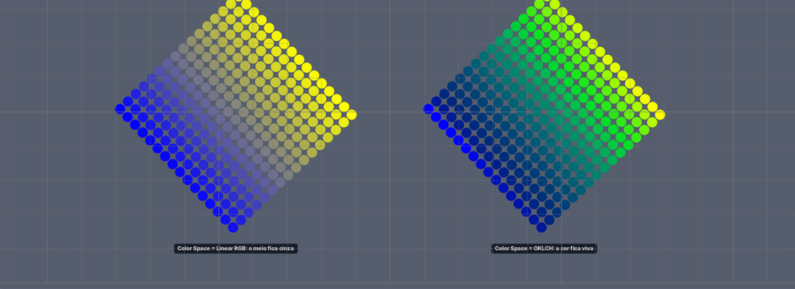
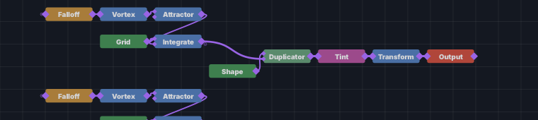

Quando o programa mistura duas cores, ele tem de escolher em que espaço faz a conta. Até aqui era sempre em RGB (vermelho, verde, azul): rápido, mas o olho não vê assim — de azul para amarelo, o meio passa por um cinza apagado, e de preto para branco o meio já está claro demais. O CSS moderno e as ferramentas de design misturam em OKLab e OKLCH, espaços feitos para o olho: a luminosidade anda por igual, e a cor roda pelo círculo das cores em vez de atravessar o cinza.
| espaço | o que faz |
|---|---|
Linear RGB | a mistura de sempre. Os documentos gravados antes continuam assim. |
OKLab | a luminosidade anda por igual. É o que um nó novo já usa. |
OKLCH Shorter | a cor roda pelo caminho curto do círculo: nunca passa pelo cinza. |
OKLCH Longer | a cor dá a volta pelo caminho longo (um arco-íris). |
Tint em modo Gradient, no
Morph (a cor do crossfade), no Mixer (Blend e Avg) e no
Color Ramp (o botão do espaço no editor do gradiente ganhou OKLab e
OKLCH). Quando uma mistura sai das cores que o ecrã consegue mostrar, ela volta para
dentro baixando a saturação (o método do CSS), nunca cortando um canal — por isso a cor não
muda de matiz no fim.Cole isto inteiro num terminal. Na primeira vez ele compila (alguns minutos); depois abre em segundos.

Linear RGB, à direita
OKLCH Shorter.No grafo há duas filas de cartões, uma por galáxia — a de cima é a da esquerda. A cor
sai do cartão Tint.

Falloff → Vortex → Attractor → Integrate), o disco
(Shape → Duplicator) e a cor (Tint).Tint e mude a linha
Color Space para OKLab.
OKLCH Shorter.
OKLCH Longer.
Mode para Solid.
Color Space desaparece: uma cor só não mistura nada.| linha | cartão | o que faz |
|---|---|---|
Color Space | Tint (Gradient) | o espaço do degradê de
Start para End |
Color Space | Morph | o espaço em que a cor de A vira a de B |
Color Space | Mixer (Blend · Avg) | o espaço da mistura das
cores das entradas; no Avg os três perceptuais fazem a média em OKLab |
| o botão do espaço | Color Ramp (editor do gradiente) | RGB · HSV · HSL ·
OKLab · OKLCH; no OKLCH o botão ao lado escolhe o sentido da cor |
Tint de cima ponha Start preto e
End branco: em Linear RGB os discos ficam claros cedo demais; em
OKLab o cinza do meio fica mesmo a meio.Start vermelho, End laranja e
OKLCH Longer: o degradê passa pelo círculo inteiro.Color Ramp, abra o editor do
gradiente e clique no botão do espaço até OKLCH.Na placa de vídeo, com 4 096 discos e o gradiente em OKLCH, a mistura perceptual dá a mesma cor
que a CPU com uma diferença de no máximo 0,000016 (um degrau de cor do ecrã é
0,004). O Color Ramp é calculado uma vez numa tabela, por isso o espaço
não custa nada por disco.
| o que você vê | o que reportar |
|---|---|
| a direita tem cinza no meio | «o OKLCH não roda a cor» + foto |
mudar o Color Space não muda nada | em que cartão |
| discos pretos ou brancos estourados | a mistura saiu da gama — o espaço e as duas cores |